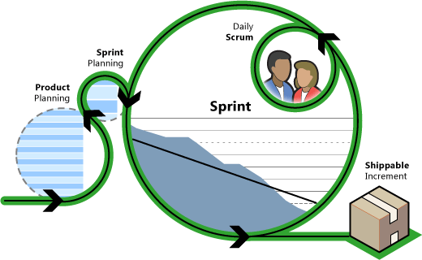
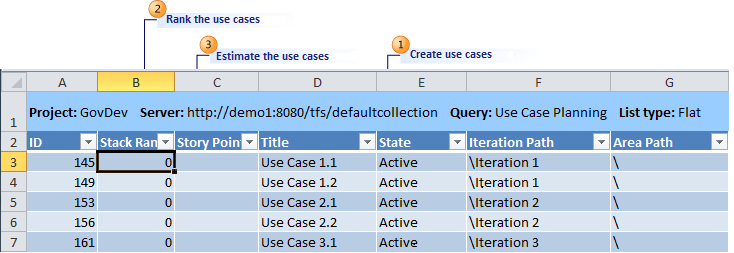
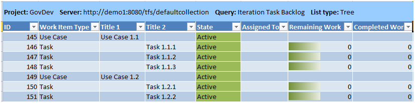
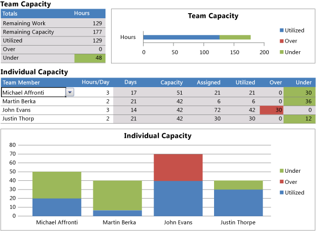
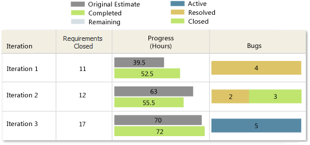

Scrum is a framework for running projects that is based on agile principles and values. It defines a set of activities that can help your team deliver more value to your customers faster. These activities provide your customers with the opportunity to review, guide and influence your team's work as it progresses. This approach does not attempt to define everything at the start of a project. Instead, your team works in short iterations (also called sprints) and refines the plan as the team makes progress. For information about the agile principles and values on which Scrum is based, see Agile Principles and Values, by Jeff Sutherland.
TO BE UPDATED GovDev for TFS 2010 v1.0 is based on Scrum. Therefore, your team can adopt Scrum by using tools that are integrated with your core development activities.
|
In This Topic |
 |
 Prepare for the Project
Prepare for the Project
Before you start your project, perform the following tasks:
-
establish the business case
-
assemble a team
-
set up your team's infrastructure
To establish a business case, identify the business need and justification, define the vision, and obtain funding. Geoffrey Moore's book "Crossing the Chasm" provides good guidance for establishing your vision. For more information, see the following Web resource: Crossing the Chasm .
After you establish the business case, you must assemble your team and identify the ScrumMaster and the product owner. For more information, see Roles.
Finally, your team must set up the infrastructure. For example, install Visual Studio Team Foundation Server and Visual Studio Application Lifecycle Management (ALM), create and possibly customize your team project, and set up engineering practices. For more information, see Getting Started with Visual Studio Application Lifecycle Management, Customizing Your Team Project, and Engineering Practices.
Plan
the Project
In a Scrum project, your team will spend most of its time developing your product in a series of sprints. However, your team must first create a high-level plan for the project. This plan is a roadmap to guide more detailed decisions that your team will make during the course of the project. As your team implements the plan, it will change. When your team has finished planning the project, the team will have created a product backlog and, if it is needed, a release plan.
Build the Product Backlog
The product backlog is a list of use cases that describe what your users need and value. The use cases are prioritized by business value and risk, and the team estimates use cases in abstract units that are called story points.

 |
Create use cases: Use cases are written from the end user’s point of view. For example: “As a returning customer, I want to find a meal that I have ordered before.” For more information, see Creating a Great Project Backlog. |
 |
Prioritize the use cases: Your product owner prioritizes the use cases in the product backlog by working with your customers to understand what they value and by working with your team to understand risks and dependencies. Your product owner specifies priorities by assigning a rank to each use case to indicate the order in which the team should implement them. Your product owner can use many techniques to analyze and compare the value of use cases. If your team already has a method for prioritizing that works well for you, use that method. A few prioritization techniques are closely associated with the agile community, such as the Kano model of customer satisfaction and relative weighting by Karl Wiegers. (For more information about relative weighting, see the following page on the Web: First Things First: Prioritizing Requirements.) Other prioritization techniques, such as cost prioritization, net present value, payback period, and internal rate of return are well established outside the agile community. These techniques are also legitimate and appropriate for prioritizing your product backlog on a Scrum project. For more information, see "Part II: Estimating Size" from the book that the following Web resource identifies: Agile Estimation and Planning . |
 |
Estimate the use cases: Your team collaboratively estimates each use case in story points. In his book "Agile Estimation and Planning," Mike Cohn defines story points this way: “Story points are a unit of measure for expressing the overall size of a use case, feature or other piece of work.” Story points are relative values that do not translate directly into a specific number of hours. Instead, story points help a team quantify the general size of the use case. These relative estimates are less precise so that they require less effort to determine, and they hold up better over time. By estimating in story points, your team will provide the general size of the use cases now and develop the more detailed estimation of hours of work later, when team members are about to implement the use cases. |
Determine Your Team's Velocity
Before your team creates its release plan and plans each sprint, your team must determine its velocity. Your team's velocity is the number of story points that it can complete in a sprint.
If your team has measured its velocity by collecting data that shows how many use cases the team completes in a given period of time, use that data. It will provide the best insight into the team's velocity. If you do not have that data now but you are starting to run your project by using Visual Studio ALM and MSF for Agile Software Development v5.0, that data will be collected over the course of the project. For more information, see Status on All Iterations Report.
If historical data is not available, your team can make a rough estimation of how many story points it can complete in the first sprint. Look at the estimated use cases at the top of the priority stack and make a quick assessment of how many use cases it could complete in a sprint. Add the story points for each of those use cases to get an initial estimate. After the first sprint, you can use historical data to determine your team's velocity. In the first few sprints, you should expect substantial variation as your team learns how to estimate consistently. Over the course of several sprints, your team's measured velocity should become more stable. When your team's measured velocity is stable, reassess the release plan.
The estimate of your team's velocity provides a starting point that you can use to determine how many use cases to implement in the sprint, but the estimate is not the basis for your team's commitment. Your team's commitment will be made based on more detailed estimations of the tasks that are required to complete the use cases. For more information, see Use Case Planning Workbook.
Establish the Release Plan
Each sprint, your team will complete an increment of the product that it could ship. Although the use cases that your team implements are ready to be shipped at the end of the sprint, they may not provide enough business value to justify actually releasing the product. Plan your releases by assigning them to iterations:
-
Identify groups of use cases that, together, provide enough business value to release to your customers.
-
Determine in which sprints the team expects to complete those groups of use cases.
As your team makes progress, use cases will be added to the product backlog, and use cases may be removed. In addition, the priority of some use cases will change, and some use cases may be implemented earlier or later than originally expected. Your product owner will maintain the release plan together with the product backlog over the course of the project.
For more information, see Use Case Planning Workbook.
Prepare for the First Sprint
A sprint is a timeboxed iteration of development that is usually one to four weeks long and that produces an increment of the product that the team could ship. Before your team starts the first sprint, your product owner prepares the product backlog. The use cases that are high enough priority to be considered in the first sprint must be ready for the team to implement. Your product owner must prepare the product backlog by performing the following tasks:
-
Break the use cases down into smaller use cases.
-
Provide details about the use cases that the team will need to break the use cases down into tasks.
Your product owner will know that a use case is too large if it represents a significant amount of the team's total velocity. For example, a use case that is 15 planning points is too large to take into the sprint planning meeting if the team's velocity is 30 story points. The team will take half the sprint just to complete that use case.
Your team will also ask for details about the use cases to be able to break them down into tasks and estimate those tasks. For example, when your team examines the use case "As a customer, I want to be able to search for a type of meal," your team may ask the following kinds of questions:
-
"Must that be a free-text search, or can it be a selection for a list of available types?"
-
"If more than one vendor provides a meal that matches the search, how should the results be sorted?"
For more information, see Preparing for the Next Sprint.
Plan
a Sprint
When your team has developed the product backlog and established a release plan, your team can start to work in sprints. Your team starts the sprint with a sprint planning meeting, in which the team commits to completing a set of use cases from the product backlog. That set of use cases, together with the supporting tasks, is the sprint backlog. For more information, see Comparing the Product and Sprint Backlogs.
After the sprint starts, the use cases in the sprint backlog are not changed. Therefore, the plan must be detailed enough that the team can make that commitment with confidence.
For more information, see Sprint Planning Meeting.
Choose use cases
Your team chooses the use casess that are candidates to be implemented in the sprint. You team identifies the use cases that have the highest priority and whose planning points do not exceed its estimated velocity. For example, the four use cases that have the highest priority might have 8, 3, 7, 6, and 2 story points. If your team had a capacity of 25 story points per sprint, your team would include the first four use cases in the sprint backlog.
For more information, see Iteration Task Backlog Workbook.
Identify Tasks
Your team evaluates each use case to determine what it must do to implement that use case. Your team breaks use cases down into tasks to help it understand the use cases well enough to make a confident commitment to complete them in the sprint.
Teams that are very experienced at Scrum may be able to make this commitment without breaking the use cases down into tasks.
Estimate Tasks
After the tasks are identified, your team estimates how long (in hours) each task will take. Teams frequently use the planning poker technique to estimate tasks. This technique helps prevent teams from trying to estimate more accurately than is necessary.
Commit to use cases
Your team uses the Iteration Task Backlog workbook to make sure that the team has enough working hours to complete all of the tasks. If the sprint has more work than your team has available in the sprint, the lowest ranked use cases must be removed until the work is within the team's capacity for the sprint. Smaller use cases that are lower priority can be exchanged for larger use cases that do not fit the sprint.
Your team commits to completing the use cases that it has determined that it can complete. It makes this commitment with the understanding that your product owner will not attempt to introduce additional work or change the priorities of the use cases that are being implemented in the sprint.
Run
a Sprint
During a sprint, your team completes the tasks that are required to implement the use cases in the sprint backlog. Your team can track its progress and make sure that it meets the customers’ acceptance criteria and your team’s criteria for finished software before you finish each sprint.
Complete use cases
After your team plans the sprint, it has a list of use cases that it has committed to completing during the sprint. Those use cases have been broken down into tasks. Each member of your team signs up for a task when the sprint starts. After completing that task, the team member updates its status and sign up for another task. In this manner, your team works through the list of tasks, completing the use cases in the sprint backlog. A team member can indicate which tasks are completed when checking in code. For more information, see Associate Work Items with Changesets.
For more information about assigning tasks and updating their status, see Task (GovDev).
Scrum relies on people talking to each other more than formal processes to make sure that dependencies are understood, that expertise is shared, and that changes in plans are made efficiently. Hold a short, daily Scrum meeting in which each member of the team shares some details about the work that they accomplished on the previous day, the work that they plan to accomplish that day, and any issues or impediments that might affect or require help from other team members. For more information, see Daily Scrum Meeting.
In his book "Extreme Programming Explained," Kent Beck talks about how it is cheaper to fix a bug sooner rather than later. Given that fact, your team must understand what is important to your customer. Perhaps the customer values quality instead of more features. Your product owner must know this kind of information because customers control the flow of the work to the team.
The software that a Scrum team produces should be error free. However, your team will likely encounter bugs in your projects. Handle bugs with the understanding that it is cheaper and quicker to fix them as they are found than it is to put them off until later. When your team finds bugs, fix them immediately. If your team cannot fix the bug on the same day that was found, create a bug work item in Visual Studio ALM and fix it before the end of the sprint.
For more information, see Bug (GovDev) .
Track Sprint Progress
Your team can track the progress of the sprint to make sure that work is being completed as expected and that it meets the acceptance criteria. Scrum teams most frequently use a burndown report to track their progress through a sprint. MSF for Agile Software Development v5.0 provides a set of reports that teams can use to track the progress of a sprint.
Burndown and Burn Rate Report (GovDev)

Build Quality Indicators Report
Burndown and Burn Rate Report (GovDev)
Teams often find that they need more or less time to complete a task than what they estimated during the sprint planning meeting. This kind of variation is typical. You can record this information by specifying the actual time that the team spent in the task.
As the sprint progresses, your team might identify work that it had not expected but that is necessary to complete a use case. In this case, create a task, estimate it and then determine whether your team can complete it in the hours that remain in the sprint. If your team can complete the task, continue with the sprint. If your team cannot complete the task in the sprint, meet with the product owner to discuss how to continue. The product owner and your team can resolve the issue by making the following kinds of changes:
-
Reduce the acceptance criteria for the use case so that the task becomes unnecessary.
-
Remove the use case from the sprint backlog.
-
Cancel the sprint.
Finish the Sprint
As the end of the sprint approaches, make sure that your team is completing all use cases or requirements. For example, make sure that the acceptance tests are passing and that each use case meets the criteria that your team defined. For more information about what it means to be done, see the following Web page: Mitch Lacey & Associates, Inc.
On the last day of the sprint, your team will demonstrate the use cases that it has completed to the product owner and possibly to your customers. Your product owner and customers will determine whether they accept each use case. For more information, see Sprint Review Meeting.
After the customer review, your team will hold a retrospective. For more information, see Retrospective Meeting .
Track
the Project
As your team works in sprints to deliver increments of the project, your customers develop a better understanding of their remaining needs, and changes in the business environment must be considered. Your product owner works with your customers to understand these changes. Your product owner will maintain the product backlog and the release plan to reflect those changes and to make sure that your team has what it needs at the start of each sprint. Your team tracks the progress of the product as a whole to make sure that it is making healthy progress toward completing the project.
Prepare for the Next Sprint
The freshness of the product backlog has a direct relationship to the overall quality and completeness of the project. The backlog must be regularly updated, changed, and rethought to make sure that it is ready every time that your team is about to start a sprint.
Your product owner prepares the product backlog for the next sprint by performing the following tasks:
-
Update the use cases and their priorities as customers' needs change.
-
Break down use cases that are likely to be implemented in the next sprint.
When your team finishes a sprint, other use cases get closer to the top of the product backlog. Your product owner must analyze and break down those use cases that are at the top so that your team can implement them in the upcoming sprint. (For more information, see Prepare for the First Sprintearlier in this topic.) Mike Cohn often talks about this process as the product backlog iceberg. As the team works on a set of functionality, the iceberg melts, new work surfaces, and the iceberg becomes smaller. In this process, additional details emerge, just enough and just in time.
Now that your team is busy running a sprint, your product owner cannot expect to have the same level of your team's involvement in maintaining the product backlog as it may have provided in preparing for the first sprint. To help your product owner prepare the product backlog with a minimum of disruption to the sprint, your team and your product owner will discuss the open issues about the product backlog over the course of the sprint.
Track Release Progress
As the project proceeds from sprint to sprint, your team will track the overall progress toward the next release. Your team will also track its progress to assess and improve its velocity. As your team tracks its progress, it should try to answer the following kinds of questions:
-
Are we working on the most appropriate use cases? Your product backlog will be refined with new use cases as the project progresses. However, if the total number of use cases in the backlog is not decreasing, even though you are completing use cases each sprint, the team should investigate the cause. The use cases being completed might not be the best choices. The team should have a vision and a goal for each release and ensure that the use cases tie directly with what is being asked of the customer.
-
Are we carrying technical debt? Some teams treat a use case as finished even though work such as fixing bugs remains to be completed. Those teams take on technical debt that they must pay later, usually at a higher cost.
Visual Studio ALM provides several reports to help your team track its progress over many sprints.
Status on All Iterations Report
Requirements Progress Report (GovDev)
Requirements Traceability Report (GovDeve)
You can create custom reports and work item queries to help track progress. For more information, see Creating, Customizing, and Managing Reports for Visual Studio ALM and Finding Bugs, Tasks, and Other Work Items.
Finish the Release
If your team is not accumulating technical debt, it can release the product when it has completed the sprints in that release, without additional work. Your team and your product owner hold customer review and retrospective meetings to examine the release as a whole.
However, technical debt is a challenging problem that teams cannot eliminate easily. If your team, like many other teams, is still accumulating technical debt, you must spend time doing the outstanding work to finish the use cases before you release your product. In the retrospective for the release, consider what your team must do in upcoming sprints to avoid taking on more debt.